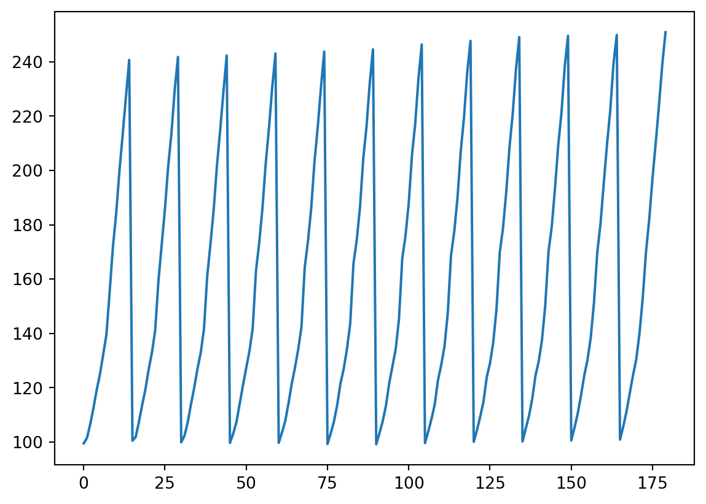

Whole dataframe: Domain Code Domain \
0 CP Consumer Price Indices
1 CP Consumer Price Indices
2 CP Consumer Price Indices
3 CP Consumer Price Indices
4 CP Consumer Price Indices
.. ... ...
176 CP Consumer Price Indices
177 CP Consumer Price Indices
178 CP Consumer Price Indices
179 CP Consumer Price Indices
180 FAOSTAT Date: Wed Aug 17 16:12:56 CEST 2016 NaN
AreaCode AreaName ElementCode ElementName ItemCode \
0 5000.0 World 7001.0 January 23013.0
1 5000.0 World 7001.0 January 23013.0
2 5000.0 World 7001.0 January 23013.0
3 5000.0 World 7001.0 January 23013.0
4 5000.0 World 7001.0 January 23013.0
.. ... ... ... ... ...
176 5000.0 World 7012.0 December 23013.0
177 5000.0 World 7012.0 December 23013.0
178 5000.0 World 7012.0 December 23013.0
179 5000.0 World 7012.0 December 23013.0
180 NaN NaN NaN NaN NaN
ItemName Year Value Flag \
0 Consumer Prices, Food Indices (2000 = 100) 2000.0 99.5 NaN
1 Consumer Prices, Food Indices (2000 = 100) 2001.0 101.5 NaN
2 Consumer Prices, Food Indices (2000 = 100) 2002.0 106.5 NaN
3 Consumer Prices, Food Indices (2000 = 100) 2003.0 112.5 NaN
4 Consumer Prices, Food Indices (2000 = 100) 2004.0 119.2 NaN
.. ... ... ... ...
176 Consumer Prices, Food Indices (2000 = 100) 2011.0 210.3 NaN
177 Consumer Prices, Food Indices (2000 = 100) 2012.0 224.2 NaN
178 Consumer Prices, Food Indices (2000 = 100) 2013.0 239.0 NaN
179 Consumer Prices, Food Indices (2000 = 100) 2014.0 250.9 NaN
180 NaN NaN NaN NaN
FlagD
0 Official data
1 Official data
2 Official data
3 Official data
4 Official data
.. ...
176 Official data
177 Official data
178 Official data
179 Official data
180 NaN
[181 rows x 12 columns]
Code
print('List of column names:', food_prices.columns)
List of column names: Index(['Domain Code', 'Domain', 'AreaCode', 'AreaName', 'ElementCode',
'ElementName', 'ItemCode', 'ItemName', 'Year', 'Value', 'Flag',
'FlagD'],
dtype='object')
print('Specific value in that column:', food_prices['Value'][6])
Specific value in that column: 132.2
Code
import matplotlibfrom matplotlib import pyplot as pltplt.plot(food_prices['Value'])plt.show()

Code
import osimport numpy as npimport pandas as pd# Set a seed value for the random generatornp.random.seed(48151623)# Creating a Series by passing a list of values, letting pandas create a default integer index:s = pd.Series([1, 3, 5, np.nan, 6, 8])# Pandas is very detailed in dealing with dates and all the quirks (leap year?) that this leads to.dates = pd.date_range('20130101', periods=6)# Creating a DataFrame by passing a NumPy array, with a datetime index and labeled columns:df = pd.DataFrame(np.random.randn(6, 4), columns=list('ABCD'))print('df:\n', df)df2 = pd.DataFrame({'A': 1.,'B': pd.Timestamp('20130102'),'C': pd.Series(1, index=list(range(4)), dtype='float32'),'D': np.array([3] *4, dtype='int32'),'E': pd.Categorical(["test", "train", "test", "train"]),'F': 'foo'})# df.head()# print(df.index)# print(df.columns)df.describe()# Also note that a dataframe is really just a numpy array dressed up with extra trappings. If you want you# can get back the raw array (though this might lose a lot of functionality).a = df.to_numpy()print('a\n', a)# Sorting Values:# Also, I want to illustrate THE MOST COMMON MISTAKE people make with Pandas.# The sort_values method (a method is just a function attached to an object) returns a NEW modified dataframe.# Thus, in the line below, if you just printed df, it would not be sorted because we didn't use the returned value.df.sort_values(by='B')# print('Not sorted:\n', df)# Easy way to get around this is just to assign the returned dataframe to a variable (even the input variable)df = df.sort_values(by='B')# print('Sorted with return:\n', df)# Alternatively, if you hate returning things, there is the inplace=True command, which will modify the df ... inplace.df.sort_values(by='B', inplace=True)# print('Sorted inplace:\n', df)## Selection/subsetting of data# Selecting a single column, which yields a Series, equivalent to df.Adf['A']df.A# Selecting via [], which slices the rows.df[0:3] # CAN BE SLOW# Note, slicing above, which uses the# standard Python / Numpy expressions for selecting and setting are intuitiveits best to use# the optimized pandas data access methods, .at, .iat, .loc and .iloc.## Selecting by LABELS, loc and ilocr = df.loc[0] # 0-th row.# print('r', r)# Discuss difference between df['A'] and df.loc[0]r = df.loc[0, 'A']r = df.loc[:, 'A'] # Colon is a slice, an empty colon means ALL the values.# OPTIMIZATION:# for faster single point access, use:r = df.at[0, 'A']# SELECTING BY POSITIONr = df.iloc[3]# Selecting with slicesr = df.iloc[3:5, 0:2]# Slices again with an empty slice.r = df.iloc[1:3, :]r = df.iloc[:, 1:3]# SIMILAR OPTIMIZATION:r = df.iat[1, 1]# Boolean indexing# Using a single column’s values to select data.r = df[df['A'] >0]# Make a copy (why?) and add a columndf2 = df.copy()df2['E'] = ['one', 'one', 'two', 'three', 'four', 'three']r = df2[df2['E'].isin(['two', 'four'])]# Setting by assigning with a NumPy array:df.loc[:, 'D'] = np.array([5] *len(df))# Missing data# First we're going to create a new df by "reindexing" the old one, which will shuffle the data into a new# order according to the index provided. At the same time, we're going to add on a new, empty column# EE, which we set as 1 for the first two obs.df1 = df.reindex(index=[2, 0, 1, 3], columns=list(df.columns) + ['EE'])df1.loc[0:1, 'EE'] =1# print(df1)# Apply: Similar to R. Applies a function across many cells (fast because it's vectorized)df.apply(np.cumsum)df.apply(lambda x: x.max() - x.min())# Concats = pd.Series(range(0, 6))# print('s', s)r = pd.concat([df, s]) # Concatenate it, default is by row, which just puts it on the bottom.r = pd.concat([df, s], axis=1) # Concatenate as a new column# print(r) # Result when concatenating a series of the same size.s = pd.Series(range(0, 7))r = pd.concat([df, s], axis=1) # Concatenate as a new columns = pd.Series(range(0, 2))r = pd.concat([df, s], axis=1) # Concatenate as a new column# Join# SQL style merges. See the Database style joining section.left = pd.DataFrame({'key': ['foo', 'bar'], 'lval': [1, 2]})right = pd.DataFrame({'key': ['foo', 'bar'], 'rval': [4, 5]})# print(left)# print(right)df = pd.merge(left, right, on='key')# print('df:\n', df)# Stackingstacked = df.stack()# print('stacked:\n', stacked)# Pivot Tablesdf = pd.DataFrame({'A': ['one', 'one', 'two', 'three'] *3,'B': ['A', 'B', 'C'] *4,'C': ['foo', 'foo', 'foo', 'bar', 'bar', 'bar'] *2,'D': np.random.randn(12),'E': np.random.randn(12)})# print(df) # SPREADSHEET VIEWdf = pd.pivot_table(df, values='D', index=['A', 'B'], columns=['C'])# print(df) # Multiindexed (Pivot table) view.# NOTICE that a pivot table is just the above date but where specific things have been made into multi-level# indices.# PLOTTINGts = pd.Series(np.random.randn(1000), index=pd.date_range('1/1/2000', periods=1000))ts = ts.cumsum()ts.plot()import matplotlib.pyplot as plt# plt.show()# Writing to filesdf.to_csv('foo.csv')# Reading files:# FIRST NOTE, here we are using relative paths (which you should almost always do too). the ../ means go up one level.# this path works if you organized your data into the folder structure I suggested.wdi_filename ="WDI_CO2_data.csv"wdi_path = os.path.join(data_directory, wdi_filename)df = pd.read_csv(wdi_path)print('csv read as a df\n', df)# For reference, here's the Excel version# df = pd.read_excel('foo.xlsx', 'Sheet1', index_col=None, na_values=['NA'])cols =list(df.columns)# Make a subset of only 2 colsr = df[['Country Code', '1970 [YR1970]']]# print(r)r = df.loc[df['Country Code'] =='CAN']# print('r', r)rr = r.loc[df['Series Name'] =='Total greenhouse gas emissions (kt of CO2 equivalent)']print(rr)# Class exercise: Plot the emissions of CO2 for Canada (or whereever I don't care).
df:
A B C D
0 0.336581 0.923754 -0.277124 0.388604
1 -1.295428 3.296657 -0.698246 0.245552
2 -1.086536 1.187113 -0.153344 -1.264476
3 0.798694 1.330577 -0.113975 -0.060949
4 -0.076321 -0.240310 0.728421 -0.384309
5 0.634212 1.605129 1.415844 0.385849
a
[[ 0.33658127 0.92375415 -0.27712413 0.38860406]
[-1.2954285 3.29665716 -0.69824576 0.24555238]
[-1.0865361 1.18711302 -0.15334368 -1.26447611]
[ 0.79869365 1.33057707 -0.11397528 -0.06094946]
[-0.07632075 -0.24031028 0.72842085 -0.38430931]
[ 0.6342119 1.60512881 1.41584369 0.38584939]]
csv read as a df
Country Name Country Code \
0 Afghanistan AFG
1 Afghanistan AFG
2 Afghanistan AFG
3 Afghanistan AFG
4 Afghanistan AFG
... ... ...
2640 NaN NaN
2641 NaN NaN
2642 NaN NaN
2643 Data from database: World Development Indicators NaN
2644 Last Updated: 10/15/2020 NaN
Series Name Series Code \
0 Access to clean fuels and technologies for coo... EG.CFT.ACCS.ZS
1 Access to electricity (% of population) EG.ELC.ACCS.ZS
2 Adjusted net enrollment rate, primary (% of pr... SE.PRM.TENR
3 Arable land (% of land area) AG.LND.ARBL.ZS
4 Agricultural methane emissions (thousand metri... EN.ATM.METH.AG.KT.CE
... ... ...
2640 NaN NaN
2641 NaN NaN
2642 NaN NaN
2643 NaN NaN
2644 NaN NaN
1960 [YR1960] 1961 [YR1961] 1962 [YR1962] 1963 [YR1963] \
0 .. .. .. ..
1 .. .. .. ..
2 .. .. .. ..
3 .. 11.7176730079956 11.7942591060871 11.8708452041785
4 .. .. .. ..
... ... ... ... ...
2640 NaN NaN NaN NaN
2641 NaN NaN NaN NaN
2642 NaN NaN NaN NaN
2643 NaN NaN NaN NaN
2644 NaN NaN NaN NaN
1964 [YR1964] 1965 [YR1965] ... 2011 [YR2011] 2012 [YR2012] \
0 .. .. ... 22.33 24.08
1 .. .. ... 43.2220189082037 69.1
2 .. .. ... .. ..
3 11.94743130227 11.94743130227 ... 11.9336458046135 11.9321140826517
4 .. .. ... .. ..
... ... ... ... ... ...
2640 NaN NaN ... NaN NaN
2641 NaN NaN ... NaN NaN
2642 NaN NaN ... NaN NaN
2643 NaN NaN ... NaN NaN
2644 NaN NaN ... NaN NaN
2013 [YR2013] 2014 [YR2014] 2015 [YR2015] 2016 [YR2016] \
0 26.17 27.99 30.1 32.44
1 68.9332656860352 89.5 71.5 97.7
2 .. .. .. ..
3 11.9244554728426 11.903011365377 11.893821033606 11.8386790429801
4 .. .. .. ..
... ... ... ... ...
2640 NaN NaN NaN NaN
2641 NaN NaN NaN NaN
2642 NaN NaN NaN NaN
2643 NaN NaN NaN NaN
2644 NaN NaN NaN NaN
2017 [YR2017] 2018 [YR2018] 2019 [YR2019] 2020 [YR2020]
0 .. .. .. ..
1 97.7 98.7132034301758 .. ..
2 .. .. .. ..
3 .. .. .. ..
4 .. .. .. ..
... ... ... ... ...
2640 NaN NaN NaN NaN
2641 NaN NaN NaN NaN
2642 NaN NaN NaN NaN
2643 NaN NaN NaN NaN
2644 NaN NaN NaN NaN
[2645 rows x 65 columns]
Country Name Country Code \
369 Canada CAN
Series Name Series Code \
369 Total greenhouse gas emissions (kt of CO2 equi... EN.ATM.GHGT.KT.CE
1960 [YR1960] 1961 [YR1961] 1962 [YR1962] 1963 [YR1963] 1964 [YR1964] \
369 .. .. .. .. ..
1965 [YR1965] ... 2011 [YR2011] 2012 [YR2012] 2013 [YR2013] \
369 .. ... 1033481.98200961 1027063.85487082 ..
2014 [YR2014] 2015 [YR2015] 2016 [YR2016] 2017 [YR2017] 2018 [YR2018] \
369 .. .. .. .. ..
2019 [YR2019] 2020 [YR2020]
369 .. ..
[1 rows x 65 columns]
C:\Users\jajohns\AppData\Local\Temp\ipykernel_26860\2184278581.py:107: FutureWarning:
In a future version, `df.iloc[:, i] = newvals` will attempt to set the values inplace instead of always setting a new array. To retain the old behavior, use either `df[df.columns[i]] = newvals` or, if columns are non-unique, `df.isetitem(i, newvals)`